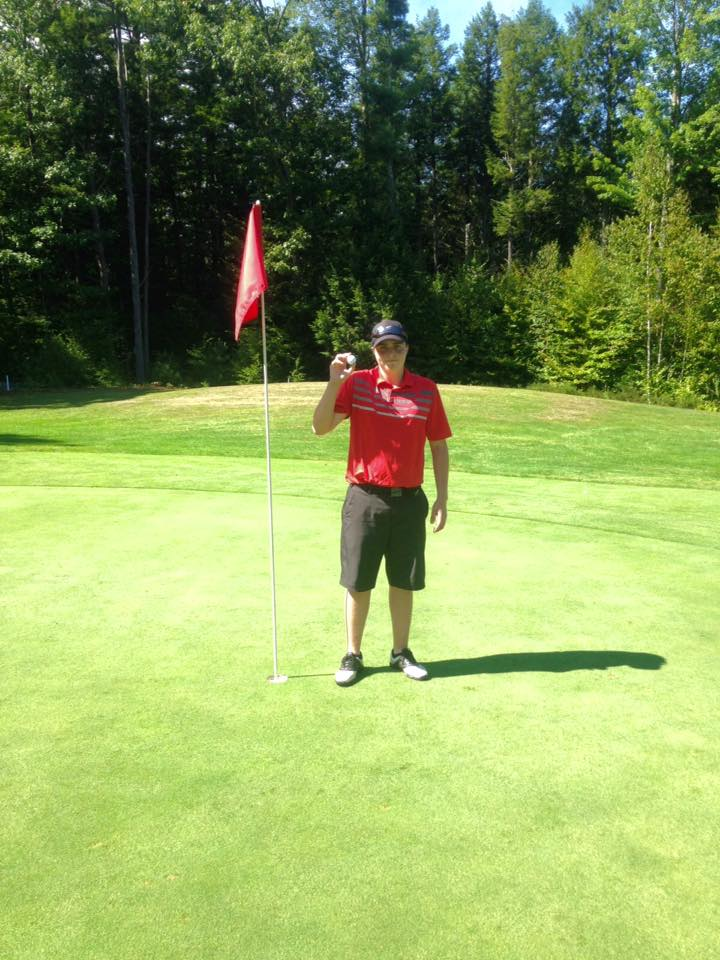

I started playing golf in 8th grade and at the time I was playing football. Then in the summer going into highschool I decided to play golf instead of football because who wants to waste half their summer doing workouts for football. I honestly started playing golf because I was lazy and didn't want to do the work for football but I fell in love with the sport and it's now my favorite. I played junior-varsity golf my freshman and sophomore year. Then varsity golf my junior and senior year. I also have gotten a hole in 1 in golf which some people will never do in their life. Then there is my biggest golf achievement ever, when I was a junior our golf team won the state championship for golf which was awesome to get during my four years playing.
